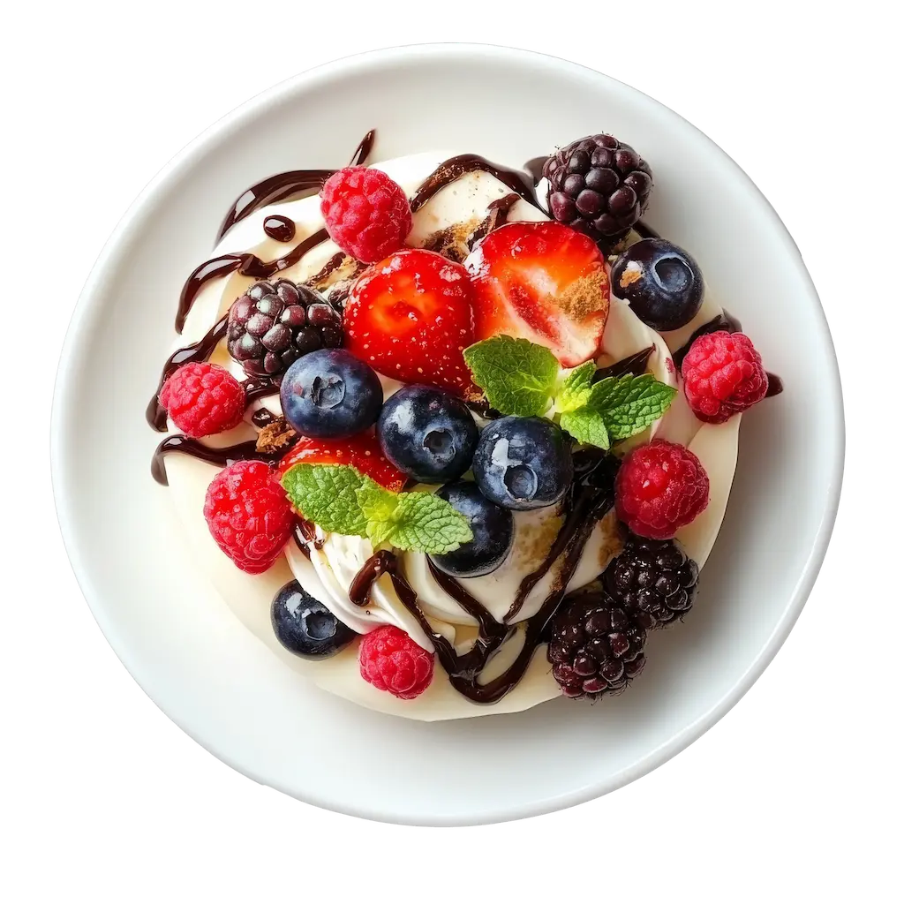

Pavlova con Frutas
Tiempo: 1 hora 30 minutos · Dificultad: Intermedia · Porciones: 6 porciones

Preparación
- Precalienta el horno a 120°C (250°F) y traza un círculo de 20 cm en una hoja de papel de hornear.
- Bate las claras a velocidad media en un tazón seco hasta que formen picos suaves.
- Añade el azúcar poco a poco (cucharada a cucharada) mientras sigues batiendo a velocidad alta hasta lograr un merengue brillante y firme.
- Añade la maicena, el vinagre y la vainilla mezclando suavemente con una espátula.
- Forma un disco o nido con el merengue sobre la bandeja preparada, haciendo una ligera hendidura en el centro.
- Hornea durante 1 hora y 15 minutos. Apaga el horno y deja enfriar el merengue por completo dentro del horno cerrado.
- Bate la crema fría con el azúcar glass a punto de chantilly. Vierte en el centro de la pavlova y decora con abundante fruta fresca.
¡Crujiente por fuera, suave como nube por dentro y repleto de frescura!
Tips de nuestra comunidad
Descubre recetas, combinaciones y secretos compartidos por otros amantes de la cocina. ¿Tienes un secreto de cocina?
Compártelo con la comunidad.
No abras la puerta del horno mientras se hornea ni mientras se enfría; el cambio brusco de temperatura agrietará el merengue.
Monta la crema y la fruta justo antes de servir para que la base de merengue no pierda su textura crujiente.